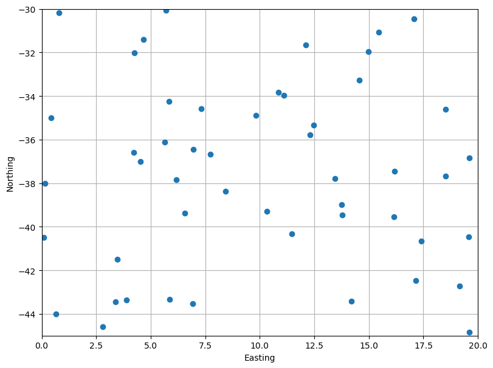
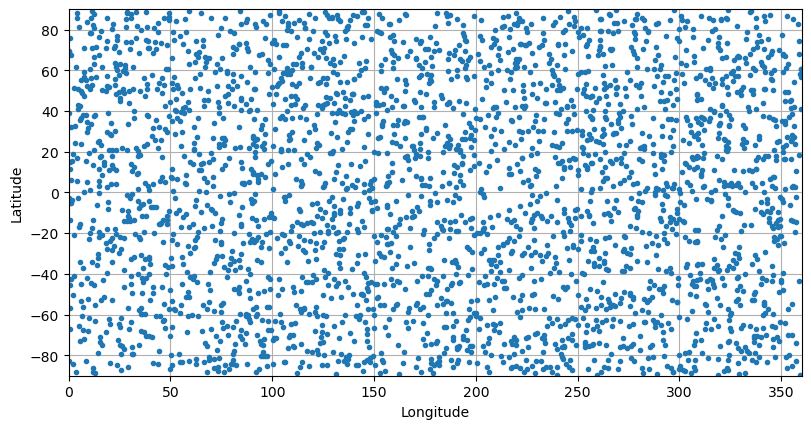
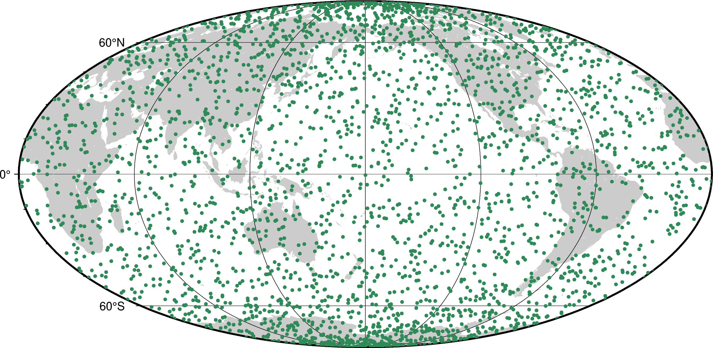
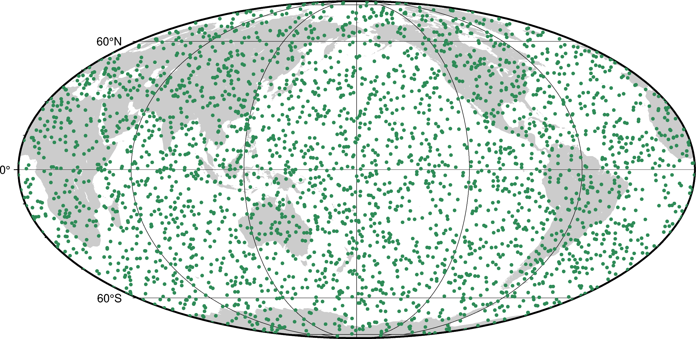

4. Random coordinates#
Sometimes, we need to generate a random spread of points in 1 or more
dimensions. This can be used for random sampling methods or simply to
generate some synthetic data on which to test new methods. Generating
uniformly distributed values using numpy.random is great but doing
so in more than 1 dimension involves some boilerplate code that could be
automated. Bordado offers functions random_coordinates and
random_coordinates_spherical for this purpose. This is how they
work.
import bordado as bd
import matplotlib.pyplot as plt
import pygmt
4.1. Generating random points#
To generate uniformly distributed random 2D point coordinates, we use bordado.random_coordinates like so:
region = (0, 20, -45, -30)
coordinates = bd.random_coordinates(region, size=50)
for i, c in enumerate(coordinates):
print(f"coordinate {i}:\n{c}\n")
coordinate 0:
[11.09789602 17.07774831 4.21669601 5.63089203 19.6090145 12.30358539
8.41944037 16.18432154 18.51891401 0.78768137 13.43411343 5.84275048
5.85999369 14.56785886 11.46742723 17.14196152 14.99028553 14.20512659
19.14802984 6.57085387 0.65162463 4.53554472 9.82184242 12.09877491
12.47233425 6.91371568 0.14462405 5.70331841 13.73870091 6.15819098
6.94721579 13.78914863 17.41027812 10.85125165 3.47476168 0.09394547
4.23300608 7.30969201 0.43592718 4.66548749 15.44542713 3.88120108
3.37035442 16.13669308 19.5872072 19.59723586 10.32114936 2.79409762
18.50446317 7.73460872]
coordinate 1:
[-33.95822304 -30.46327532 -36.59057215 -36.1260965 -44.83049887
-35.79367833 -38.38620298 -37.45425205 -34.61633118 -30.17733313
-37.80158842 -34.24680747 -43.34388857 -33.28524574 -40.33185222
-42.47482592 -31.95548067 -43.4144948 -42.71901099 -39.37475596
-44.01455588 -37.00188798 -34.8828041 -31.65016267 -35.34120927
-43.51873483 -38.01113068 -30.06581954 -38.99876239 -37.83050217
-36.44454838 -39.46788272 -40.65062486 -33.83026849 -41.50490595
-40.48259271 -32.01362786 -34.58462469 -35.003774 -31.41186924
-31.07652068 -43.35687961 -43.44081964 -39.55530864 -40.45150349
-36.85315929 -39.3072197 -44.58514817 -37.68561606 -36.66067423]
Since the region has 4 elements, it is assumed that there are two dimensions
in our problem and so 2 coordinates arrays are generated. Because the points are
uniformly distributed, there is only a size argument and no spacing like in
bordado.grid_coordinates or bordado.line_coordinates.
Hint
The values above will be different every time we run the function because
it will instantiate a new numpy.random.default_rng every time. We
can control the randomness by passing a random_seed argument. This can
be an integer seed or a numpy.random.Generator.
Let’s plot these points to see their distribution:
fig, ax = plt.subplots(1, 1, figsize=(8, 6), layout="constrained")
ax.plot(*coordinates, "o")
ax.set_aspect("equal")
ax.set_xlim(*region[:2])
ax.set_ylim(*region[2:])
ax.set_xlabel("Easting")
ax.set_ylabel("Northing")
ax.grid()
plt.show()

As expected, they are random and with no bias inside the given region (hence, uniformly distributed).
4.2. Random points on the sphere#
The method above is useful, but it shouldn’t be used with geographic longitude and latitude coordinates. Let’s illustrate why with an example. We’ll generate random points distributed globally:
region = (0, 360, -90, 90) # W, E, S, N in degrees
size = 3000
coordinates = bd.random_coordinates(region, size)
fig, ax = plt.subplots(1, 1, figsize=(8, 6), layout="constrained")
ax.plot(*coordinates, ".")
ax.set_aspect("equal")
ax.set_xlim(*region[:2])
ax.set_ylim(*region[2:])
ax.set_xlabel("Longitude")
ax.set_ylabel("Latitude")
ax.grid()
plt.show()

Plotted like this, things seem fine. But this type of plot can be very misleading for geographic data. If I plot them on a map using a cartographic projection, a pattern will appear:
fig = pygmt.Figure()
fig.coast(land="#cccccc", region="g", projection="W20c", frame="afg")
fig.plot(x=coordinates[0], y=coordinates[1], style="c0.1c", fill="seagreen")
fig.show()

Now we can see that the concentration of points is larger at the poles than at the equator. This is because the meridians of longitude converge at the poles. Hence, a degree of longitude corresponds to a smaller and smaller physical size on the surface of the Earth towards the poles.
See also
The map above was generated with a Mollweide projection, which is an equal-area projection.
To generate random points on a sphere that have a uniform distribution, we
can use bordado.random_coordinates_spherical, which accounts for this
convergence of meridians:
coordinates_sphere = bd.random_coordinates_spherical(region, size)
fig = pygmt.Figure()
fig.coast(land="#cccccc", region="g", projection="W20c", frame="afg")
fig.plot(x=coordinates_sphere[0], y=coordinates_sphere[1], style="c0.1c", fill="seagreen")
fig.show()

Notice that now the point concentration is uniform on the Earth.
4.3. What’s next#
Now that we can make some synthetic data with random points, let’s see how we can split and segment the data based on spatial blocks and windows in “Splitting points into blocks”.
Have questions?
Please ask on any of the Fatiando a Terra community channels!